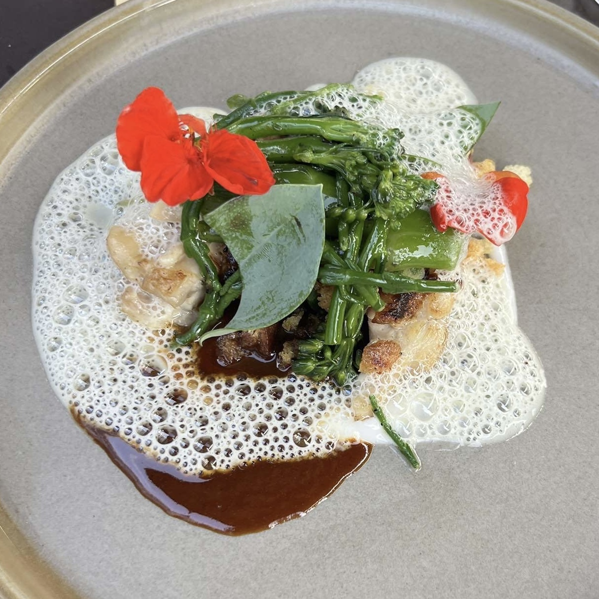

Restaurant De Kas
Restaurant de kas is een restaurant in het Frankendael park, Amsterdam oost. Het restaurant zit...
De Moestuin
Aan het restaurant ligt een tuin en een kweekkas die worden gebruikt om kruiden, eetbare bloemen te telen. Ook...
Groei, Oogst, Kook
Zelf een eigen tuintje starten net als de kas en daarmee je eigen basis benoigdheden maken voor in de keuken...